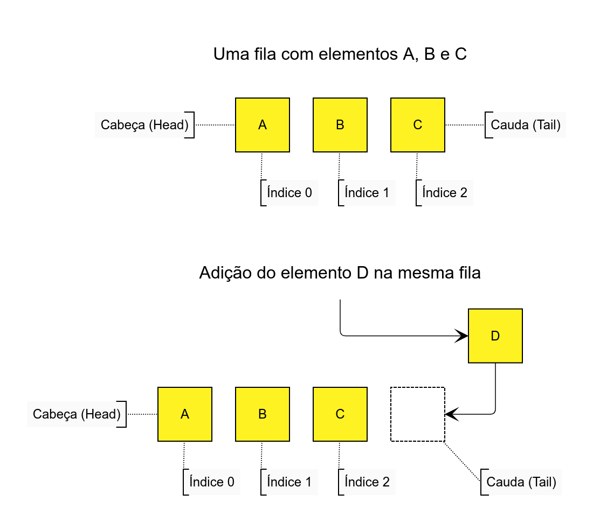
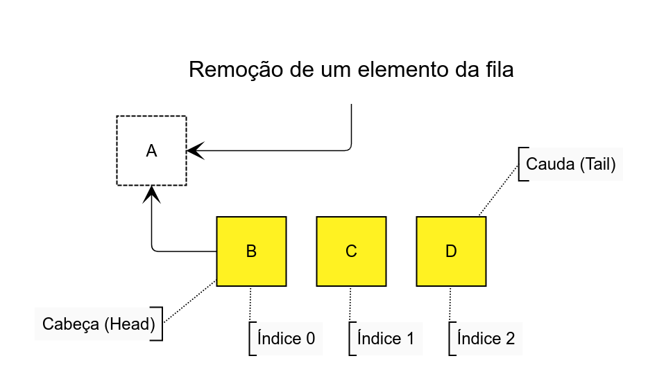

Filas em Python com deque (queue)
Filas em Python podem ser implementadas utilizando a estrutura de
dados deque (do módulo
collections) para garantirmos complexidade de tempo constante para
inserção e remoção de elementos em
qualquer uma das pontas, cabeça (head) ou cauda (tail).
Deque – abreviação de
Double Ended Queue (ou Fila de duas pontas) – pode
ser usada para implementar filas FIFO (que veremos a seguir) e
pilhas LIFO.
O que são filas?
Quando falamos em filas, estamos tratando de uma estrutura de dados abstrata que se comporta exatamente como uma fila na vida real. Elementos são adicionados à cauda (tail) e removidos da frente (head).
Porém, remover elementos da frente (com índice 0) pode ser problemático do ponto de vista de desempenho do programa. Por exemplo, poderíamos usar listas para criar filas (como fizemos com as pilhas), porém elas não são otimizadas para isso e acabam movendo os índices de todos os elementos posteriores ao elemento removido. Infelizmente, isso nos dá uma complexidade de tempo linear O(n), ou seja, ao remover um item do começo da lista, o interpretador precisa navegar em todos os seus elementos, reajustando os índices dos elementos restantes.
No entanto, isso não ocorre com deque. Segundo
a
documentação oficial do Python, deque adiciona e remove em ambas as
direções com complexidade de tempo de
aproximadamente O(1). Isso quer dizer que requer aproximadamente
uma operação para a adição e
remoção de elementos.
De forma resumida, deque é mais rápido
para inserir e remover elementos da frente da fila (no
índice 0).
Filas são FIFO
Na programação, o comportamento de uma fila é conhecido como FIFO (First In First Out), ou seja, o primeiro que entrar será o primeiro a sair. Isso é exatamente o que acontece em uma fila da vida real, a primeira pessoa a entrar na fila, será a primeira a ser atendida. É claro, se ninguém furar a fila!
Imagine uma fila de letras: A, B, C.
Agora, suponha que eu quero adicionar um novo elemento, o D. Para as filas, esse elemento deve ser adicionado na cauda, como mostra o diagrama a seguir:

Mas, se eu precisasse remover um elemento da fila anterior, o elemento removido deveria sair na cabeça (head).
Este elemento é representado pelo A na imagem a seguir:

Além disso, perceba que agora, além da minha fila
não ter mais o elemento A, os índices foram
reorganizados. B passou a ter o índice 0, C, índice
1 e D, índice 2. Lembre-se que deque é
otimizada para isso.
Outra informação que você deve ter percebido, é que a cabeça (head) e a cauda (tail) da minha fila também mudaram. B é a cabeça e D a cauda.
Filas em Python com deque
Se fossemos representar a fila apresentada nas imagens anteriores com os elementos A, B e C, em seguida acrescentar o elemento D, o código ficaria da seguinte maneira:
from collections import deque
fila = deque(['A', 'B', 'C'])
# Inserindo o elemento D
fila.append('D')
# deque(['A', 'B', 'C', 'D'])
print(fila)
Perceba que deque tem quase os mesmos métodos
de uma lista normal no Python (por isso podemos usá-las
como
pilhas
se quisermos). Então, para inserir um novo elemento na
cauda da fila, basta usarmos o método append.
Para a remoção do elemento A (como fizemos na
seção anterior desse post), poderíamos
utilizar o método popleft (remover da
esquerda).
from collections import deque
fila = deque(['A', 'B', 'C'])
# Inserindo o elemento D
fila.append('D')
# Removendo A
fila.popleft()
# deque(['B', 'C', 'D'])
print(fila)
É bem simples, não é mesmo?
popleft retorna o elemento removido
Um comportamento padrão sempre que usamos métodos
“pop” (de remoção) é
que o elemento removido é retornado por essa
função. Isso não é diferente como
popleft.
Por exemplo, se eu estou removendo um elemento da minha fila, é natural querer usá-lo em algum momento do meu código. Então, eu poderia usar uma variável para isso.
from collections import deque
fila = deque(['A', 'B', 'C'])
# Inserindo o elemento D
fila.append('D')
# Removendo A e usando seu valor
head = fila.popleft()
# A
print(head)
# deque(['B', 'C', 'D'])
print(fila)
Perceba que no código acima (linha 9),
popleft faz duas coisas:
- Remove o primeiro elemento da fila (cabeça);
-
Retorna o valor do elemento removido para a variável
head(A).
Assim, é possível utilizar o valor removido conforme preferir no seu código.
Criando uma filas em Python
Assim como fizemos com as pilhas (no
artigo anterior), podemos encapsular deque em uma classe para
manter o controle sobre os métodos que deverão ser
utilizados para manter o comportamento FIFO das
filas. Afinal, deque não tem apenas os
métodos append e popleft. De
fato, se você conferir a
documentação oficial, vai ver que existem vários outros métodos
possíveis para deque, incluindo os que quebram
o princípio FIFO, removendo elementos da
cauda ou inserindo na cabeça, por exemplo.
from typing import Deque, Any
from collections import deque
class Queue:
"""Uma classe representando uma fila"""
def __init__(self, maxlen=None) -> None:
# Deque permite enviar maxlen
# para criar um tamanho máximo para
# a fila
self.__items: Deque[Any] = deque(maxlen=maxlen)
def enqueue(self, *items: Any) -> None:
"""Enqueue (enfileirar) é o mesmo que append"""
for item in items:
self.__items.append(item)
def dequeue(self) -> Any:
"""Dequeue (desenfileirar) é o mesmo que popleft"""
if not self:
raise IndexError('pop from empty queue')
return self.__items.popleft()
def __repr__(self) -> str:
return str(self.__items)
def __bool__(self) -> bool:
return bool(self.__items)
def __len__(self) -> int:
return len(self.__items)
Na classe anterior, criei apenas os métodos que precisava
para minha fila. Nesse sentido, também mudei o nome de
algumas coisas: append passou a ser
enqueue (enfileirar); popleft passou a
ser dequeue (desenfileirar). Contudo, eles continuam
fazendo o mesmo trabalho.
Também permiti adicionar o argumento
“maxlen” de deque, para
fixar um tamanho máximo para nossa fila.
Além disso, nós precisamos saber de três coisas muito importantes:
-
Quais valores estão na fila? Por isso o método
__repr__; -
Existem valores na minha fila? Por isso o método
__bool__; -
Quantos valores tem na minha fila? Por isso o método
__len__.
Você pode enfeitar essa classe com os métodos que preferir. Aqui eu quis manter as coisas o mais simples que foi possível.
Agora podemos usar a classe:
if __name__ == "__main__":
# Instanciando
fila = Queue()
# Enfileirando A, B e C
fila.enqueue('A', 'B', 'C')
# Enfileirando D
fila.enqueue('D')
# Recuperando A
head = fila.dequeue()
print(head)
# Mostrando a fila
print(fila)
"""
Resultado:
A
deque(['B', 'C', 'D'])
"""
Indo além do básico
Em algum momento, você pode querer iterar sobre a sua fila
ou então obter um item diretamente. Pra isso podemos
repassar o método __iter__ da nossa classe
para o método __iter__ do
deque da mesma (__items). Veja a
implementação do método
__iter__ por si só.
Este método deve estar dentro da classe, é claro (não se preocupe, vou mostrar o código completo logo abaixo).
def __iter__(self) -> Iterator:
return self.__items.__iter__()
Por fim, se você quiser permitir que um item da fila seja obtido pelo seu índice, também pode implementar o método __getitem__, dessa maneira:
def __getitem__(self, index: int) -> Any:
return self.__items[index]
Veja como ficou nossa classe completa:
from typing import Deque, Any, Iterator
from collections import deque
class Queue:
"""Uma classe representando uma fila"""
def __init__(self, maxlen=None) -> None:
# Deque permite enviar maxlen
# para criar um tamanho máximo para
# a fila
self.__items: Deque[Any] = deque(maxlen=maxlen)
def enqueue(self, *items: Any) -> None:
"""Enqueue (enfileirar) é o mesmo que append"""
for item in items:
self.__items.append(item)
def dequeue(self) -> Any:
"""Dequeue (desenfileirar) é o mesmo que popleft"""
if not self:
raise IndexError('pop from empty queue')
return self.__items.popleft()
def __repr__(self) -> str:
return str(self.__items)
def __bool__(self) -> bool:
return bool(self.__items)
def __len__(self) -> int:
return len(self.__items)
def __iter__(self) -> Iterator:
return self.__items.__iter__()
def __getitem__(self, index: int) -> Any:
return self.__items[index]
Perceba que agora temos os métodos __iter__ e __getitem__. Isso nos permite iterar sobre nossa fila e também obter itens por índice, veja:
if __name__ == "__main__":
# Instanciando
fila = Queue()
# Enfileirando A, B, C e D
fila.enqueue('A', 'B', 'C', 'D')
# Obtendo o elemento com índice 1 (B)
print('Item com índice 1:', fila[1], end='\n\n')
# Iterando com for em nossa fila
for item in fila:
print('Iteração:', item)
"""
Resultado:
Item com índice 1: B
Iteração: A
Iteração: B
Iteração: C
Iteração: D
"""
Nossa classe ficou assim, simples mas útil e eficaz. Todavia, você pode adicionar os métodos que preferir. Apenas adicionei métodos que acho que podem ser úteis.
Resumo
Em conclusão, você viu o seguinte ao decorrer desse post:
-
Filas em Python podem ser implementadas utilizando
deque; - Filas têm o comportamento FIFO (First In First Out), assim como na vida real;
appendadiciona elementos na cauda (tail);-
popleftremove elementos da cabeça (head); -
dequeé muito genérica, por isso criamos nossa própria classe para permitir apenas os métodos que queremos.
Como resultado, agora você já sabe criar filas em
Python. Além disso, também sabe usar
deque, que é outra estrutura de dados abstrata
conhecida em programação.
Te vejo no próximo post!